Detección de patrones de anomalías térmicas en el Caribe usando datos ERA5 y análisis estadístico multivariable: Analisis Exploratorio#
importacion de librerias#
import xarray as xr
import matplotlib.pyplot as plt
import numpy as np
import seaborn as sns
from statsmodels.stats.outliers_influence import variance_inflation_factor
from scipy import stats
from scipy.signal import periodogram
from scipy.stats import shapiro, boxcox, norm
from scipy.signal import periodogram
from statsmodels.tsa.stattools import adfuller, acf, pacf, ccf
from statsmodels.graphics.tsaplots import plot_acf, plot_pacf
from sklearn.decomposition import PCA
from sklearn.preprocessing import StandardScaler
import cartopy.crs as ccrs
import cartopy.feature as cfeature
from pymannkendall import original_test as mk_test
import warnings
warnings.filterwarnings("ignore")
Funciones#
def plot_series_brutas(df, variables, titulo_grupo):
n = len(variables)
fig, axes = plt.subplots(n, 1, figsize=(14, 2.5*n), sharex=True)
if n == 1:
axes = [axes]
for ax, var in zip(axes, variables):
ax.plot(df.index, df[var], linewidth=0.7, color="steelblue")
# Línea de tendencia lineal encima
x_num = np.arange(len(df))
slope, intercept, r, p, _ = stats.linregress(x_num, df[var].values)
tendencia = slope * x_num + intercept
ax.plot(df.index, tendencia, color="red", linewidth=1.2,
linestyle="--", label=f"tendencia (p={p:.3f})")
ax.set_ylabel(var, fontsize=9)
ax.grid(alpha=0.3)
ax.legend(fontsize=8, loc="upper right")
fig.suptitle(f"Series temporales brutas — {titulo_grupo}", fontsize=13)
axes[-1].set_xlabel("Tiempo")
plt.tight_layout()
plt.show()
def calcular_anomalias(df):
"""Resta la media mensual climatológica a cada observación."""
clim_mensual = df.groupby(df.index.month).mean()
anomalias = df.copy()
for mes in range(1, 13):
mask = df.index.month == mes
anomalias.loc[mask] = df.loc[mask] - clim_mensual.loc[mes]
return anomalias
def plot_anomalias(df_anom, variables, titulo_grupo):
n = len(variables)
fig, axes = plt.subplots(n, 1, figsize=(14, 2.5*n), sharex=True)
if n == 1:
axes = [axes]
for ax, var in zip(axes, variables):
vals = df_anom[var].values
colores = np.where(vals >= 0, "tomato", "steelblue")
# Bar plot: rojo = anomalía positiva, azul = negativa
ax.bar(df_anom.index, vals, color=colores, width=20, linewidth=0)
ax.axhline(0, color="black", linewidth=0.8)
# Media móvil 12 meses para señal interanual
mm12 = df_anom[var].rolling(12, center=True).mean()
ax.plot(df_anom.index, mm12, color="black",
linewidth=1.5, label="media móvil 12 m")
ax.set_ylabel(var, fontsize=9)
ax.grid(alpha=0.2)
ax.legend(fontsize=8, loc="upper right")
fig.suptitle(f"Anomalías respecto a climatología mensual — {titulo_grupo}", fontsize=13)
axes[-1].set_xlabel("Tiempo")
plt.tight_layout()
plt.show()
def plot_ciclo_estacional(df, variables, titulo_grupo,meses_nombres):
n = len(variables)
ncols = min(2, n)
nrows = int(np.ceil(n / ncols))
fig, axes = plt.subplots(nrows, ncols, figsize=(7*ncols, 3.5*nrows))
axes = np.array(axes).flatten()
for ax, var in zip(axes, variables):
por_mes = df.groupby(df.index.month)[var]
media = por_mes.mean()
std = por_mes.std()
ax.fill_between(range(1, 13),
media - std, media + std,
alpha=0.25, color="steelblue", label="±1σ")
ax.plot(range(1, 13), media,
marker="o", color="steelblue", linewidth=2, label="media")
ax.set_xticks(range(1, 13))
ax.set_xticklabels(meses_nombres, fontsize=8)
ax.set_title(var)
ax.grid(alpha=0.3)
ax.legend(fontsize=8)
for ax in axes[n:]:
ax.axis("off")
fig.suptitle(f"Ciclo estacional con ±1σ — {titulo_grupo}", fontsize=13)
plt.tight_layout()
plt.show()
def boxplot_mensual(df, var):
plt.figure(figsize=(10,4))
sns.boxplot(
x="month",
y=var,
data=df,
showfliers=False
)
plt.title(f"Distribución mensual de {var}")
plt.xlabel("Mes")
plt.ylabel(var)
plt.grid(alpha=0.3)
plt.show()
def boxplots_grupo(df, variables, titulo):
n = len(variables)
fig, axes = plt.subplots(n, 1, figsize=(10, 3*n), sharex=True)
if n == 1:
axes = [axes]
for ax, var in zip(axes, variables):
sns.boxplot(
x="month",
y=var,
data=df,
showfliers=False,
ax=ax
)
ax.set_title(var)
ax.grid(alpha=0.3)
fig.suptitle(titulo, fontsize=14)
plt.tight_layout()
plt.show()
Cargado de datos#
ds = xr.open_dataset(r"C:\Users\Hp\Documents\era5_caribe_mensual_1976_2025_UNIFICADO.nc")
print(ds)
<xarray.Dataset> Size: 877MB
Dimensions: (step: 12, latitude: 73, longitude: 65, time: 600)
Coordinates:
number int64 8B ...
* step (step) timedelta64[ns] 96B 01:00:00 02:00:00 ... 12:00:00
surface float64 8B ...
* latitude (latitude) float64 584B 13.0 12.75 12.5 12.25 ... -4.5 -4.75 -5.0
* longitude (longitude) float64 520B -82.0 -81.75 -81.5 ... -66.25 -66.0
* time (time) datetime64[ns] 5kB 1976-01-01 1976-02-01 ... 2025-12-01
Data variables:
u10 (time, latitude, longitude) float32 11MB ...
v10 (time, latitude, longitude) float32 11MB ...
t2m (time, latitude, longitude) float32 11MB ...
e (time, step, latitude, longitude) float32 137MB ...
msl (time, latitude, longitude) float32 11MB ...
sst (time, latitude, longitude) float32 11MB ...
slhf (time, step, latitude, longitude) float32 137MB ...
ssr (time, step, latitude, longitude) float32 137MB ...
ssrd (time, step, latitude, longitude) float32 137MB ...
strd (time, step, latitude, longitude) float32 137MB ...
tp (time, step, latitude, longitude) float32 137MB ...
Attributes:
title: ERA5 Región Caribe — Promedios Mensuales 1976-2025
source: Copernicus Climate Change Service (C3S) — ERA5
history: Procesado con xarray/cfgrib. Promedio mensual de da...
region: Caribe: lat [-5, 13], lon [-82, -66]
variables: 11 variables ERA5 single levels
temporal_resolution: Monthly mean
target_variable: t2m (2m temperature)
DICCIONARIO DE LAS VARIABLES
'10m_u_component_of_wind': {'short_name': 'u10', 'alias': 'u10'},
'10m_v_component_of_wind': {'short_name': 'v10', 'alias': 'v10'},
'2m_temperature': {'short_name': 't2m', 'alias': 't2m'},
'evaporation': {'short_name': 'e', 'alias': 'e'},
'mean_sea_level_pressure': {'short_name': 'msl', 'alias': 'msl'},
'sea_surface_temperature': {'short_name': 'sst', 'alias': 'sst'},
'surface_latent_heat_flux': {'short_name': 'slhf', 'alias': 'slhf'},
'surface_net_solar_radiation': {'short_name': 'ssr', 'alias': 'ssr'},
'surface_solar_radiation_downwards': {'short_name': 'ssrd', 'alias': 'ssrd'},
'surface_thermal_radiation_downwards':{'short_name': 'strd','alias': 'strd'},
'total_precipitation': {'short_name': 'tp', 'alias': 'tp'},
ESTRUCTURA VISIBLE DE LOS DATOS
Es un dataset climático multidimensional proveniente de Copernicus Climate Change Service (ERA5), con:
Cobertura temporal: 1976 → 2025 (600 meses)
Resolución temporal: mensual
Región: Caribe (incluye parte del norte de Sudamérica)
dimensiones son:
time (600): tiempo (mensual)
latitude (73): eje vertical del mapa
longitude (65): eje horizontal del mapa
step (12): step representa horizonte temporal dentro del mes
Coordenadas:
latitude: 13 → -5 : Va de norte a sur (Caribe hacia zona ecuatorial)
longitude: -82 → -66: Incluye Colombia, Caribe, parte de Centroamérica
time: 1976-01 → 2025-12 → Serie temporal completa
Variables:
Variables sin step: Estas dependen de:
(time, latitude, longitude)
t2m → temperatura a 2m (variable objetivo)
sst → temperatura superficial del mar
msl → presión a nivel del mar
u10, v10 → componentes del viento
Variables con step: Estas dependen de:
(time, step, latitude, longitude)
tp: precipitación
ssr, ssrd: radiación solar
strd: radiación térmica
slhf: flujo de calor latente
e: evaporación
Tamaño y complejidad:
877 MB
Variables con step dominan el tamaño(computacional)
Variable Objetivo:
Temperatura 2m (temperatura superficial)
COSAS IMPORTANTES A NOTAR:
3 Dimensiones:
– Temporal
– Espacial
– Multivariables
variables con y sin step (a la hora de tratar y analizar)
La variabilidad es mensual
Es un dataset local, evitar generalizaciones
verificaciones iniciales de los datos#
1. Integridad#
verificacion de valores faltantes
for var in ds.data_vars:
missing = ds[var].isnull().sum().item()
print(f"{var}: {missing} valores faltantes")
u10: 0 valores faltantes
v10: 0 valores faltantes
t2m: 0 valores faltantes
e: 0 valores faltantes
msl: 0 valores faltantes
sst: 2010600 valores faltantes
slhf: 0 valores faltantes
ssr: 0 valores faltantes
ssrd: 0 valores faltantes
strd: 0 valores faltantes
tp: 0 valores faltantes
La variable sst presenta valores faltantes significativos (~2 millones), lo cual es consistente con su naturaleza física, ya que solo está definida sobre superficies oceánicas. No se identifican valores faltantes en las demás variables, lo que indica alta completitud del dataset.
ds['sst'].isel(time=0).plot()
<matplotlib.collections.QuadMesh at 0x13bb1b539d0>
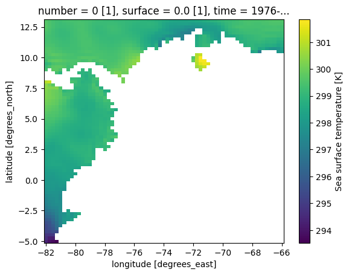
Como se puede ver en la grafica puesto que todo lo que no es mar se considera vacio
Continuidad temporal
import pandas as pd
time_diff = pd.Series(ds.time.values).diff().value_counts()
print(time_diff)
31 days 349
30 days 200
28 days 37
29 days 13
Name: count, dtype: int64
Esto es perfecto.
Refleja:
Meses reales del calendario:
31 días
30 días
Febrero (28/29)
O sea:
No hay saltos temporales
No faltan meses
La serie temporal es continua y consistente con la estructura mensual del calendario, sin evidencia de datos faltantes o discontinuidades.
Dimensiones consistentes
for var in ds.data_vars:
print(var, ds[var].dims)
u10 ('time', 'latitude', 'longitude')
v10 ('time', 'latitude', 'longitude')
t2m ('time', 'latitude', 'longitude')
e ('time', 'step', 'latitude', 'longitude')
msl ('time', 'latitude', 'longitude')
sst ('time', 'latitude', 'longitude')
slhf ('time', 'step', 'latitude', 'longitude')
ssr ('time', 'step', 'latitude', 'longitude')
ssrd ('time', 'step', 'latitude', 'longitude')
strd ('time', 'step', 'latitude', 'longitude')
tp ('time', 'step', 'latitude', 'longitude')
Las dimensiones de las variables son coherentes con su naturaleza física, diferenciando correctamente entre variables instantáneas y variables dependientes del horizonte temporal (step).
Cobertura espacial completa
print(ds.latitude.min().item(), ds.latitude.max().item())
print(ds.longitude.min().item(), ds.longitude.max().item())
-5.0 13.0
-82.0 -66.0
Esto coincide exactamente con:
region: Caribe
ademas que no hay cortes ni inconsistencias
Conclusion integridad
El dataset presenta una alta integridad estructural. No se identifican valores faltantes en la mayoría de las variables, con excepción de sst, cuyos valores faltantes son consistentes con su definición física (solo sobre océanos). La serie temporal es continua y respeta la periodicidad mensual del calendario. Las dimensiones de las variables son coherentes y la cobertura espacial corresponde correctamente a la región del Caribe sin inconsistencias.
2. Exactitud#
def check_exactitud(ds):
print("=== VERIFICACIÓN DE EXACTITUD ===")
for var in ds.data_vars:
data = ds[var]
print(f"\nVariable: {var}")
# Estadísticas básicas
min_val = float(data.min())
max_val = float(data.max())
print(f"Min: {min_val}")
print(f"Max: {max_val}")
# --- Reglas físicas ---
# Temperatura (Kelvin)
if var in ['t2m', 'sst']:
invalid = ((data < 150) | (data > 350)).sum().item()
print(f"Valores fuera de rango físico (150K - 350K): {invalid}")
# Precipitación
elif var == 'tp':
invalid = (data < 0).sum().item()
print(f"Valores negativos (inválidos): {invalid}")
# Viento
elif var in ['u10', 'v10']:
invalid = (np.abs(data) > 150).sum().item()
print(f"Valores extremos (>150 m/s): {invalid}")
# Presión
elif var == 'msl':
invalid = ((data < 80000) | (data > 120000)).sum().item()
print(f"Valores fuera de rango (80000 - 120000 Pa): {invalid}")
# Radiación y flujos
elif var in ['ssr', 'ssrd', 'strd', 'slhf']:
invalid = (data < 0).sum().item()
print(f"Valores negativos (posible error): {invalid}")
# Evaporación
elif var == 'e':
# Puede ser negativa (condensación), así que solo extremos
invalid = (np.abs(data) > 1).sum().item()
print(f"Valores extremos (>1 m de agua): {invalid}")
else:
print("No hay regla definida para esta variable")
check_exactitud(ds)
=== VERIFICACIÓN DE EXACTITUD ===
Variable: u10
Min: -12.790410041809082
Max: 7.410929203033447
Valores extremos (>150 m/s): 0
Variable: v10
Min: -9.319337844848633
Max: 8.784035682678223
Valores extremos (>150 m/s): 0
Variable: t2m
Min: 277.9945373535156
Max: 307.7173156738281
Valores fuera de rango físico (150K - 350K): 0
Variable: e
Min: -0.0003844672755803913
Max: 7.191924396465765e-06
Valores extremos (>1 m de agua): 0
Variable: msl
Min: 100633.5703125
Max: 102413.2578125
Valores fuera de rango (80000 - 120000 Pa): 0
Variable: sst
Min: 288.7977600097656
Max: 306.53436279296875
Valores fuera de rango físico (150K - 350K): 0
Variable: slhf
Min: -961469.9375
Max: 17982.09765625
Valores negativos (posible error): 34161568
Variable: ssr
Min: 2649.806396484375
Max: 1787591.75
Valores negativos (posible error): 0
Variable: ssrd
Min: 2883.0966796875
Max: 1852527.5
Valores negativos (posible error): 0
Variable: strd
Min: 911246.4375
Max: 1619786.5
Valores negativos (posible error): 0
Variable: tp
Min: 0.0
Max: 0.007257516961544752
Valores negativos (inválidos): 0
Conclusion general Exactitud Las variables analizadas presentan valores dentro de rangos físicamente plausibles, sin evidencia de errores críticos como valores imposibles o inconsistentes. Las variables de temperatura, presión, viento y precipitación muestran comportamientos coherentes con la región del Caribe. Algunas variables de flujo energético, como slhf, presentan valores negativos debido a convenciones físicas y magnitudes elevadas asociadas a acumulaciones temporales, lo cual no constituye un error sino una característica del dataset.
3. Validez#
Tipos de datos
for var in ds.data_vars:
print(var, ds[var].dtype)
u10 float32
v10 float32
t2m float32
e float32
msl float32
sst float32
slhf float32
ssr float32
ssrd float32
strd float32
tp float32
Esto es exactamente lo esperado en datos climáticos.
Coordenadas validas
print(ds.latitude.values[:5])
print(ds.longitude.values[:5])
[13. 12.75 12.5 12.25 12. ]
[-82. -81.75 -81.5 -81.25 -81. ]
Las coordenadas geográficas son válidas, consistentes y corresponden a una grilla regular sobre la región del Caribe. Se observa un orden descendente en latitud.
Verificacion del tiempo
print(ds.time.dtype)
datetime64[ns]
Esto es el estándar ideal en Python
Conclusion general Validez
El dataset cumple con los criterios de validez, presentando tipos de datos consistentes (float32) en todas las variables, adecuados para representar magnitudes físicas continuas. Las coordenadas espaciales son válidas y corresponden a una grilla regular dentro de los rangos geográficos esperados. La variable temporal se encuentra en formato datetime64[ns], lo que garantiza compatibilidad con herramientas de análisis temporal y permite realizar operaciones avanzadas sin inconvenientes.
Conclusion final de la verificacion:
Integridad: Alta
Exactitud: sin errores fisicos
Validez: Estructura correcta
vars_era5 = list(ds.data_vars)
vars_era5
['u10', 'v10', 't2m', 'e', 'msl', 'sst', 'slhf', 'ssr', 'ssrd', 'strd', 'tp']
vars_no_step = ["t2m", "sst", "msl", "u10", "v10"]
vars_step = ["tp", "ssr", "ssrd", "strd", "slhf", "e"]
ds_step_monthly = ds[vars_step].sum(dim="step", skipna=True)
ds_full = xr.merge([ds[vars_no_step], ds_step_monthly])
ds_ts = ds_full.mean(dim=["latitude", "longitude"], skipna=True)
df_ts = ds_ts.to_dataframe().drop(columns=["number", "surface"], errors="ignore")
df_ts.index = pd.to_datetime(df_ts.index)
tiempo = df_ts.index
df_ts['month'] = df_ts.index.month
todas_vars = list(df_ts.columns)
Dimension temporal#
se realiza el analisis de las variables a nivel temporal, creando graficos temporales como series de tiempo, verificando si se tienen anomalias climaticas y la estacionalidad de las series de cada variable a lo largo del tiempo
Series de tiempo#
grupos = {
"Temperatura": ["t2m", "sst"],
"Precipitación": ["tp"]
}
for nombre, vars_g in grupos.items():
plot_series_brutas(df_ts, vars_g, nombre)
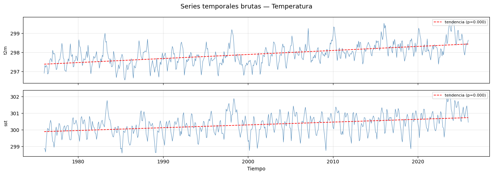
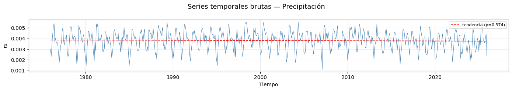
Las variables de temperatura muestran la señal más robusta de cambio climático en el dataset.
t2m (Temperatura a 2m) y sst (Temperatura superficial del mar): Ambos indicadores presentan una tendencia ascendente lineal con un valor de p extremadamente bajo (\(p=0.000\)).
Observación: Se nota un incremento aproximado de 1°C entre el inicio y el final de la serie, con picos de calor cada vez más frecuentes e intensos en la última década (2015-2025).
tp (Precipitación total): A diferencia de las variables térmicas, la precipitación no muestra una señal clara de cambio antropogénico en este dataset.
Tendencia: Presenta una estabilidad interanual con una pendiente prácticamente nula y un valor de p no significativo (\(p=0.374\)).
Observación: La serie está dominada por la variabilidad natural y la estacionalidad, manteniendo un rango de oscilación constante entre 0.001 y 0.005 unidades a lo largo de los 50 años registrados.
Ciclos Extremos: Aunque la media es estable, se identifican años con mínimos pluviométricos acentuados (posibles sequías) en periodos específicos como 1980, 2007 y 2021, sin que estos aumenten en frecuencia aparente.
Anomalias mensuales#
df_anom = calcular_anomalias(df_ts)
for nombre, vars_g in grupos.items():
plot_anomalias(df_anom, vars_g, nombre)
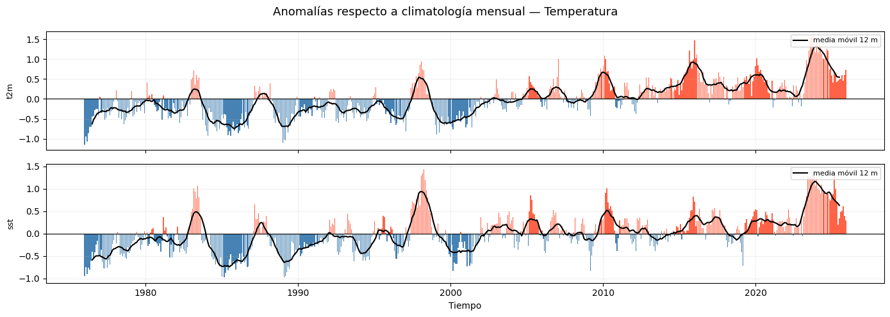
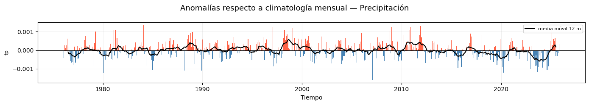
Tendencia de Temperaturas (t2m y sst): Las gráficas de temperatura muestran una correlación casi perfecta entre la atmósfera y el océano, revelando un cambio estructural en el clima:
Transición de Fase: Se observa un cambio drástico de un predominio de anomalías negativas (barras azules) en las décadas de los 70 y 80, hacia un dominio absoluto de anomalías positivas (barras rojas) a partir del año 2000.
Aceleración Reciente: La media móvil de 12 meses (línea negra) muestra que el periodo 2023-2024 es el más cálido del registro, superando los \(1.0^{\circ}C\) de anomalía.
Eventos Cíclicos: Los picos pronunciados coinciden con años de fuerte influencia de El Niño (1998, 2016, 2024).
Comportamiento de la Precipitación (tp): A diferencia de la temperatura, la precipitación presenta una señal mucho más volátil (“ruidosa”):
Variabilidad Extrema: No hay una tendencia lineal tan marcada, pero sí una mayor amplitud en las oscilaciones recientes.
Relación Hídrica: Los periodos de mayor temperatura suelen coincidir con picos de precipitación positiva, sugiriendo una intensificación del ciclo hidrológico en años cálidos.
Ciclo estacional#
meses_nombres = ["Ene","Feb","Mar","Abr","May","Jun",
"Jul","Ago","Sep","Oct","Nov","Dic"]
for nombre, vars_g in grupos.items():
plot_ciclo_estacional(df_ts, vars_g, nombre,meses_nombres)
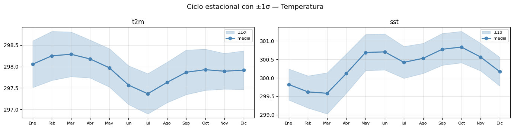
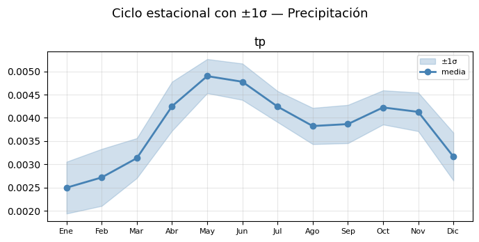
Temperatura del Aire (t2m)
Comportamiento Bimodal: Presenta dos picos de calentamiento, siendo marzo el mes más caluroso (\(~298.3 K\)).
Mínimo Térmico: Se observa un enfriamiento marcado que llega a su punto más bajo en julio.
Variabilidad: El sombreado (\(\pm1\sigma\)) es constante, lo que sugiere que la temperatura varía de forma similar año tras año.
Temperatura superficial del mar (sst)
Inercia y Desfase: El mar alcanza su temperatura máxima en mayo-junio (posterior al pico del aire), superando los \(300 K\).
Evento de Enfriamiento: Existe una caída notable en julio, posiblemente asociada a fenómenos de surgencia o cambios en corrientes superficiales.
Influencia: Los valores altos de SST coinciden con el inicio de la temporada de lluvias, actuando como fuente de energía y humedad.
Precipitación Total (tp)
Temporada de Lluvias: El ciclo es claramente estacional. Las lluvias aumentan drásticamente en abril hasta alcanzar su máximo en mayo.
La Canícula (Veranillo): Se observa una disminución relativa de las lluvias en agosto, un fenómeno típico de regiones tropicales.
Temporada Seca: Los niveles más bajos de precipitación ocurren entre enero y marzo, coincidiendo con la fase de mayor radiación solar antes del pico térmico.
Realizamos a sus vez las pruebas estadisticas relacionadas a series de tiempo como Mann-Kendall y el test de estacionareidad ADF, asi como el analisis espectral para determinar los ciclos anuales e interanuales
Prueba de Mann-Kendall y ciclos temporales#
Realizamos el metodo de Mann-Kendall
print(f"{'Variable':<10} {'Trend':<12} {'p-value':<12} {'Sen slope (u/mes)':<20} {'Sen slope (u/dec)'}")
for var in df_ts.columns:
if var == 'month':
continue
result = mk_test(df_ts[var].dropna().values)
slope_dec = result.slope * 12 * 10 # por década
print(f"{var:<10} {result.trend:<12} {result.p:<12.4f} {result.slope:<20.6f} {slope_dec:.4f}")
Variable Trend p-value Sen slope (u/mes) Sen slope (u/dec)
t2m increasing 0.0000 0.001740 0.2087
sst increasing 0.0000 0.001416 0.1699
msl increasing 0.0001 0.083015 9.9618
u10 increasing 0.0386 0.000238 0.0286
v10 no trend 0.9888 -0.000002 -0.0003
tp no trend 0.2382 -0.000000 -0.0000
ssr increasing 0.0126 336.483981 40378.0778
ssrd increasing 0.0136 374.634515 44956.1418
strd increasing 0.0000 283.000150 33960.0180
slhf decreasing 0.0000 -415.429658 -49851.5589
e decreasing 0.0000 -0.000000 -0.0000
Se aplicó el test no paramétrico de Mann–Kendall para evaluar la presencia de tendencias monótonas en las series temporales de las variables climáticas analizadas, junto con la estimación de la pendiente de Sen para cuantificar la magnitud del cambio. Este enfoque es robusto frente a valores extremos y no requiere el supuesto de normalidad.
Temperatura: Los resultados muestran una tendencia creciente estadísticamente significativa en la temperatura del aire (t2m) y en la temperatura superficial del mar (sst), con incrementos aproximados de 0.21 y 0.17 unidades por década, respectivamente. Estas señales indican un calentamiento sostenido del sistema atmósfera–océano en la región de estudio.
Presion y Viento: La presión a nivel del mar (msl) también presenta una tendencia creciente significativa, lo que sugiere posibles cambios en los patrones de circulación atmosférica regional. De forma similar, la componente zonal del viento (u10) muestra una tendencia positiva débil pero estadísticamente significativa, mientras que la componente meridional (v10) no evidencia una tendencia detectable. No obstante, el análisis espacial revela que estas señales no son homogéneas, por lo que los resultados deben interpretarse como cambios integrados a escala regional.
Radiación: Las variables radiativas (ssr, ssrd y strd) exhiben tendencias crecientes significativas en las series temporales promedio. Sin embargo, la ausencia de patrones espaciales coherentes sugiere que estas tendencias reflejan cambios energéticos promedio, potencialmente asociados a variaciones en nubosidad o condiciones radiativas, más que una señal climática regional uniforme.
flujo y evaporación: Por el contrario, el flujo de calor latente (slhf) y la evaporación (e) presentan tendencias decrecientes significativas, indicando modificaciones en el intercambio de energía y humedad entre la superficie y la atmósfera. Estas disminuciones pueden estar relacionadas con cambios en la disponibilidad de humedad o en las condiciones termodinámicas superficiales.
Precipitación: La precipitación total (tp) no muestra una tendencia monótona estadísticamente significativa en la serie temporal regional, lo que indica estabilidad en los acumulados medios a largo plazo. Esto no descarta posibles cambios en la variabilidad intra-anual o en la frecuencia de eventos extremos, aspectos que requieren análisis específicos adicionales.
realizamos el analisis de los ciclos anuales e iteranuales
vars_tp_temp = ["t2m", "sst", "tp"]
vars_tp_temp = [v for v in vars_tp_temp if v in df_ts.columns]
fig, axes = plt.subplots(len(vars_tp_temp), 1,
figsize=(14, 3 * len(vars_tp_temp)),
sharex=True)
if len(vars_tp_temp) == 1:
axes = [axes]
for ax, var in zip(axes, vars_tp_temp):
serie = df_ts[var].dropna().values
freqs, power = periodogram(serie, fs=1)
mask = freqs > 0
periodos = 1 / freqs[mask]
ax.semilogy(periodos, power[mask], linewidth=0.8)
ax.axvline(12, color='red', linestyle='--', linewidth=1, label='12 m (anual)')
ax.axvline(6, color='orange', linestyle='--', linewidth=1, label='6 m (semi-anual)')
ax.axvline(24, color='purple', linestyle='--', linewidth=1, label='24 m')
ax.set_xlim(0, 150)
ax.set_ylabel(var, fontsize=9)
ax.legend(fontsize=7, loc='upper right')
ax.grid(alpha=0.3)
axes[-1].set_xlabel("Periodo (meses)")
fig.suptitle("Periodograma — Temperatura y Precipitación", fontsize=13)
plt.tight_layout()
plt.show()
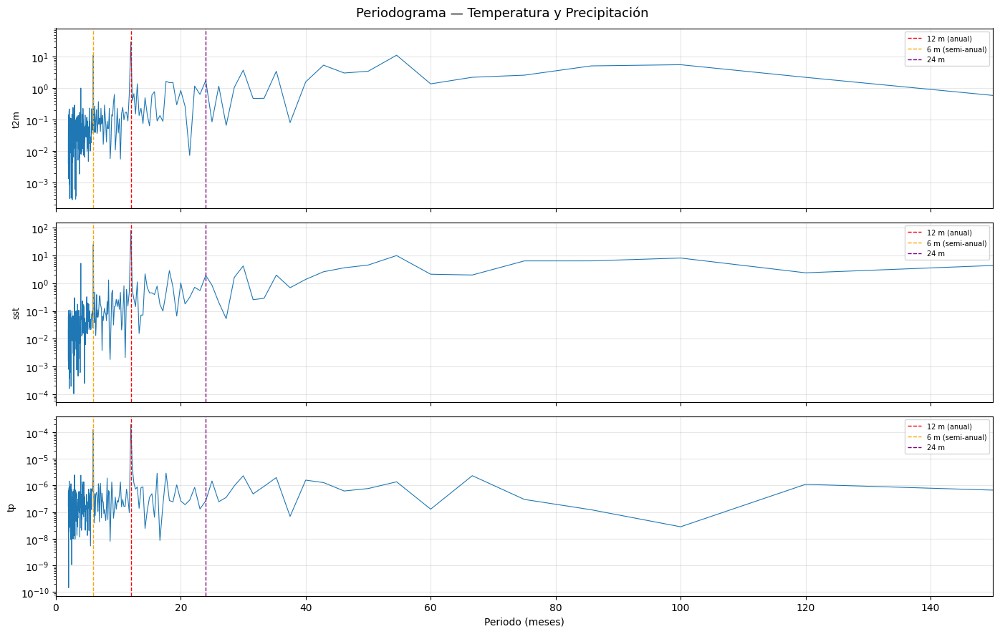
El análisis espectral mediante periodogramas permite identificar las escalas temporales dominantes en la variabilidad de las series climáticas. En este caso, se evaluaron la temperatura del aire (t2m), la temperatura superficial del mar (sst) y la precipitación total (tp).
Temperatura:
Para t2m, el periodograma muestra un pico dominante alrededor de los 12 meses, lo que evidencia un ciclo anual claramente definido. También se observa una señal secundaria en torno a los 6 meses, asociada a un componente semi-anual, aunque de menor intensidad. La potencia disminuye hacia periodos más largos, indicando que la estacionalidad anual domina la variabilidad temporal de la temperatura del aire.
La sst presenta un comportamiento similar, con un máximo espectral en la escala anual (12 meses). Sin embargo, a diferencia de t2m, la potencia relativa en escalas mayores a un año es más persistente, lo que sugiere una mayor memoria térmica del océano y una respuesta más lenta a los forzamientos atmosféricos.
Precipitacion:
En contraste, la precipitación (tp) no muestra un pico anual claramente dominante. La potencia espectral se encuentra más dispersa entre diferentes periodos, reflejando una alta variabilidad intra-anual y un carácter más irregular y episódico. Esto indica que la precipitación no está controlada principalmente por un ciclo periódico simple, sino por procesos dinámicos más complejos.
En conjunto, el periodograma confirma una estacionalidad fuerte y bien definida en las variables de temperatura, mientras que la precipitación presenta un comportamiento espectral más ruidoso y menos periódico. Estos resultados son consistentes con los análisis de tendencia previos y resaltan la necesidad de enfoques diferenciados para el estudio de la variabilidad y el modelado de estas variables.
# ── ADF + ACF + PACF ─────────────────────────────────────────────────────────
target_vars = [v for v in vars_tp_temp if v in df_ts.columns]
print(f"{'Variable':<10} {'ADF stat':<12} {'p-value':<10} {'Estacionaria?'}")
print("-" * 50)
for var in target_vars:
serie = df_ts[var].dropna()
adf_result = adfuller(serie, autolag='AIC')
estacionaria = "SÍ" if adf_result[1] < 0.05 else "NO"
print(f"{var:<10} {adf_result[0]:<12.4f} {adf_result[1]:<10.4f} {estacionaria}")
# ── Gráfica ACF + PACF para t2m (variable objetivo) ─────────────────────────
fig, axes = plt.subplots(1, 2, figsize=(14, 4))
plot_acf(df_ts['t2m'].dropna(), lags=48, ax=axes[0], alpha=0.05)
axes[0].set_title("ACF — t2m (hasta lag 48 meses)")
axes[0].grid(alpha=0.3)
plot_pacf(df_ts['t2m'].dropna(), lags=48, ax=axes[1], alpha=0.05, method='ywm')
axes[1].set_title("PACF — t2m (hasta lag 48 meses)")
axes[1].grid(alpha=0.3)
plt.tight_layout()
plt.show()
# ── ACF de anomalías para ver persistencia ────────────────────────────────────
fig, axes = plt.subplots(1, 2, figsize=(14, 4))
plot_acf(df_anom['t2m'].dropna(), lags=48, ax=axes[0], alpha=0.05)
axes[0].set_title("ACF — anomalías t2m")
plot_acf(df_anom['sst'].dropna(), lags=48, ax=axes[1], alpha=0.05)
axes[1].set_title("ACF — anomalías sst")
plt.tight_layout()
plt.show()
Variable ADF stat p-value Estacionaria?
--------------------------------------------------
t2m -3.4224 0.0102 SÍ
sst -4.5233 0.0002 SÍ
tp -5.7735 0.0000 SÍ
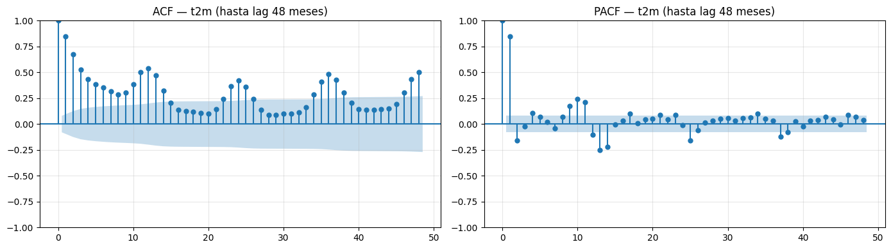
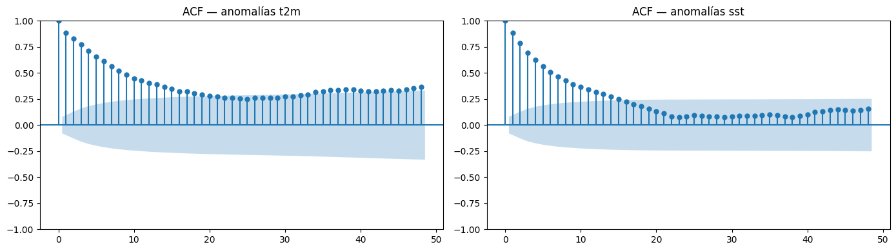
Dimension Espacial#
se realiza un analisis espacial con el analisis de mapas climatologicos y la variabilidad espacial de estos mapas, para analizar de esta manera el patron espacial promedio considerando todo el rango de tiempo
Los datos corresponden a promedios mensuales por año. Por tanto, los análisis espaciales representan climatologías multianuales de promedios mensuales, y la variabilidad temporal refleja cambios interanuales y estacionales combinados, no variabilidad de alta frecuencia (diaria u horaria).
Mapas climatologicos por variable#
Realizamos mapas climatologicos mostrandolos de manera organizada para mayor facilidad de analisis
def detectar_dim(ds, claves):
for d in ds.dims:
if any(k in d.lower() for k in claves):
return d
return None
lat_dim = detectar_dim(ds, ["lat"])
lon_dim = detectar_dim(ds, ["lon"])
time_dim = detectar_dim(ds, ["time"])
step_dim = detectar_dim(ds, ["step"])
print(f"lat={lat_dim}, lon={lon_dim}, time={time_dim}, step={step_dim}")
lat=latitude, lon=longitude, time=time, step=step
vars_no_step = ["t2m", "sst", "msl", "u10", "v10"]
ds_clim_no_step = ds[vars_no_step].mean(dim=time_dim, skipna=True)
ncols = 3
nrows = int(np.ceil(len(vars_no_step) / ncols))
fig, axes = plt.subplots(nrows, ncols, figsize=(4*ncols, 3*nrows))
axes = axes.flatten()
for ax, var in zip(axes, vars_no_step):
da = ds_clim_no_step[var]
da.plot(ax=ax, cmap="viridis", add_colorbar=True)
ax.set_title(var)
ax.set_xlabel("")
ax.set_ylabel("")
# Ocultar ejes vacíos
for ax in axes[len(vars_no_step):]:
ax.axis("off")
plt.suptitle("Climatología espacial — variables sin step", fontsize=14)
plt.tight_layout()
plt.show()
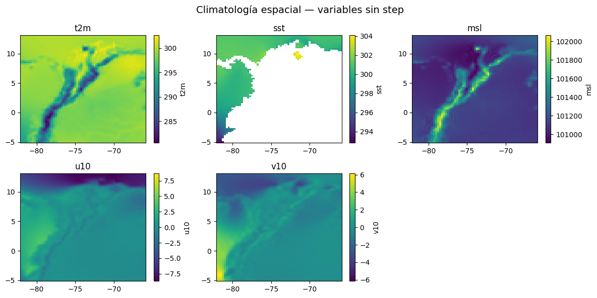
Las variables sin dimensión step representan estados instantáneos o promediables del sistema atmósfera–océano y permiten la construcción directa de mapas climatológicos mediante el promedio temporal del período de estudio.
Temperatura a 2 m (
t2m): La climatología espacial de la temperatura a 2 m muestra un gradiente espacial coherente con la distribución regional de superficie continental y oceánica. Se observan valores más homogéneos sobre el océano y mayor variabilidad sobre zonas continentales, lo cual es físicamente consistente. La ausencia de discontinuidades o artefactos espaciales confirma la calidad del campo y su idoneidad como variable objetivo en etapas posteriores de modelado.Temperatura superficial del mar (
sst): El campo medio de la temperatura superficial del mar presenta una distribución suave y continua, con una clara delimitación entre regiones oceánicas y continentales. Este patrón confirma la correcta aplicación de la máscara tierra–mar en el dataset. Dado su carácter oceánico, esta variable no es directamente interpretable sobre tierra, lo cual debe considerarse en el preprocesamiento y selección de predictores.Presión a nivel del mar (
msl): La climatología de la presión a nivel del mar exhibe gradientes espaciales amplios y estructuras de gran escala, asociadas a patrones sinópticos persistentes. La baja variabilidad espacial relativa sugiere que esta variable actúa principalmente como un forzamiento de fondo, aportando contexto dinámico más que variabilidad local.Componentes del viento a 10 m (
u10,v10): Los mapas climatológicos de las componentes zonal y meridional del viento evidencian patrones direccionales bien definidos, coherentes con la circulación atmosférica regional del Caribe. La marcada anisotropía espacial sugiere que el viento no debe ser tratado como una variable escalar simple, sino preferiblemente mediante su magnitud y/o codificación direccional, con el fin de capturar adecuadamente su influencia en el sistema.
vars_step = ["tp", "ssr", "ssrd", "strd", "slhf", "e"]
ds_step_integrated = ds[vars_step].sum(dim=step_dim, skipna=True)
ds_clim_step = ds_step_integrated.mean(dim=time_dim, skipna=True)
ncols = 3
nrows = int(np.ceil(len(vars_step) / ncols))
fig, axes = plt.subplots(nrows, ncols, figsize=(4*ncols, 3*nrows))
axes = axes.flatten()
for ax, var in zip(axes, vars_step):
da = ds_clim_step[var]
da.plot(ax=ax, cmap="magma", add_colorbar=True)
ax.set_title(var)
ax.set_xlabel("")
ax.set_ylabel("")
for ax in axes[len(vars_step):]:
ax.axis("off")
plt.suptitle("Climatología espacial — variables acumuladas", fontsize=14)
plt.tight_layout()
plt.show()
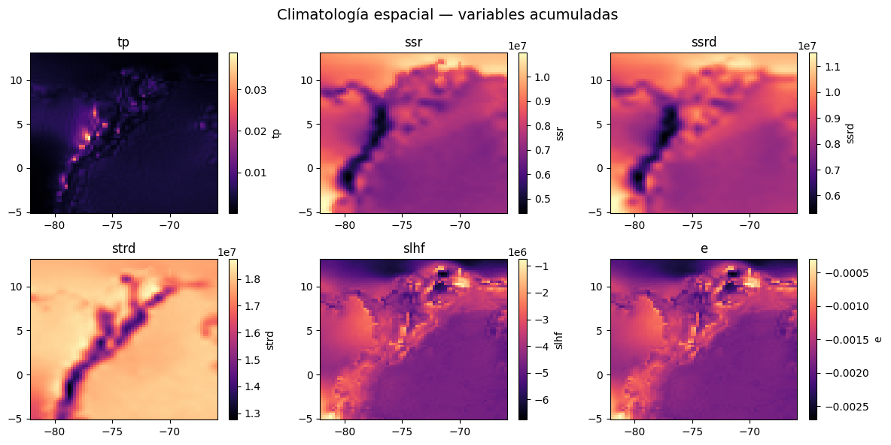
Las variables con dimensión step representan acumulaciones o integrales temporales asociadas a flujos energéticos e hídricos. Para garantizar consistencia física, estas variables fueron integradas sobre la dimensión step antes del cálculo de la climatología espacial.
Precipitación total (
tp): La climatología de la precipitación total revela una alta heterogeneidad espacial, caracterizada por núcleos intensos localizados y extensas regiones de baja precipitación media. Este comportamiento refleja la naturaleza intermitente y altamente no lineal de la precipitación, dominada por eventos extremos. En términos de modelado, esta variable puede requerir transformaciones adicionales (por ejemplo, escalas logarítmicas o discretización) para reducir su asimetría.Radiación solar (
ssr,ssrd): Los campos climatológicos de la radiación solar superficial muestran patrones espaciales muy similares entre sí, con gradientes suaves y alta coherencia regional. Esta similitud sugiere una fuerte correlación entre ambas variables, indicando redundancia informativa. En consecuencia, resulta metodológicamente razonable considerar la exclusión de una de ellas en etapas posteriores de selección de variables.Radiación térmica descendente (
strd): La radiación térmica descendente presenta un patrón espacial distinto al de la radiación solar, con una distribución estrechamente relacionada con la temperatura atmosférica y superficial. Esta variable constituye un componente clave del balance energético y se perfila como un predictor relevante para variables térmicas comot2m.Flujo de calor latente (
slhf): El flujo de calor latente muestra valores predominantemente negativos, coherentes con la convención física asociada a la transferencia de energía desde la superficie hacia la atmósfera. Su alta variabilidad espacial refleja diferencias regionales en los procesos de evaporación y convección, destacando su importancia en la dinámica local del sistema.Evaporación (
e): La climatología de la evaporación presenta patrones espaciales muy similares a los observados en el flujo de calor latente, diferenciándose principalmente por la escala de magnitud. Esta fuerte similitud indica una elevada correlación entre ambas variables, sugiriendo redundancia. Por tanto, no resulta necesario incluir simultáneamente ambas variables en el conjunto de predictores.
Variabilidad espacial#
se verficia a su vez la variabilidad espacial para verificar donde varian mas las variables a nivel espacial y ver cuales son las zonas mas estables climaticamente
Variables sin step (instantáneas)#
ds_std_no_step = ds[vars_no_step].std(dim=time_dim, skipna=True)
ncols = 3
nrows = int(np.ceil(len(vars_no_step) / ncols))
fig, axes = plt.subplots(nrows, ncols, figsize=(4*ncols, 3*nrows))
axes = axes.flatten()
for ax, var in zip(axes, vars_no_step):
da = ds_std_no_step[var]
da.plot(ax=ax, cmap="viridis", add_colorbar=True)
ax.set_title(f"{var} (STD)")
ax.set_xlabel("")
ax.set_ylabel("")
for ax in axes[len(vars_no_step):]:
ax.axis("off")
plt.suptitle("Variabilidad espacial (STD temporal) — variables sin step", fontsize=14)
plt.tight_layout()
plt.show()
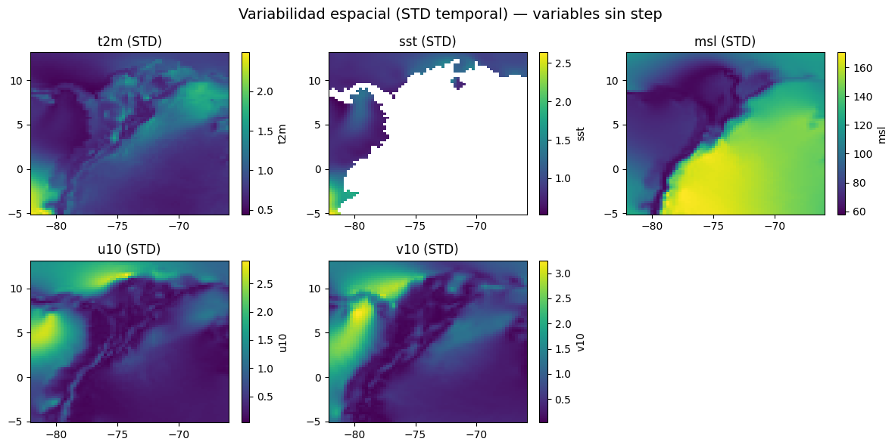
t2m — Temperatura a 2 metros
La mayor variabilidad (STD ~2°C) se concentra en la zona andina y continental, lo cual es esperable: la orografía introduce fuertes gradientes térmicos. El océano exhibe STD baja, reflejando un comportamiento térmico más estable temporalmente.
sst — Temperatura superficial del mar
Alta variabilidad en la costa pacífica colombiana y el norte del Caribe. La zona enmascarada en tierra es correcta. La variabilidad en el Pacífico Este tropical puede estar capturando señal de ENSO (variabilidad interanual).
msl — Presión a nivel del mar
Patrón muy marcado: alta STD sobre tierra (especialmente Andes, >140 Pa) y baja en el Caribe abierto. Esto puede reflejar efectos orográficos y térmicos continentales, pero también puede constituir una señal espuria derivada de la reducción de presión al nivel del mar sobre topografía compleja. Se recomienda verificar este comportamiento antes de usar msl como predictor en zonas de alta elevación.
u10 / v10 — Viento a 10 metros
Ambas componentes muestran alta variabilidad en la costa Pacífica y la franja ITCZ. La baja STD en el Caribe central confirma un régimen de vientos alisios estable y persistente. Notably, v10 (componente meridional) presenta mayor variabilidad que u10, consistente con el desplazamiento N-S de la ITCZ a lo largo del año.
Variables acumuladas#
# Integrar acumulados
ds_step_integrated = ds[vars_step].sum(dim=step_dim, skipna=True)
# STD temporal
ds_std_step = ds_step_integrated.std(dim=time_dim, skipna=True)
ncols = 3
nrows = int(np.ceil(len(vars_step) / ncols))
fig, axes = plt.subplots(nrows, ncols, figsize=(4*ncols, 3*nrows))
axes = axes.flatten()
for ax, var in zip(axes, vars_step):
da = ds_std_step[var]
da.plot(ax=ax, cmap="magma", add_colorbar=True)
ax.set_title(f"{var} (STD)")
ax.set_xlabel("")
ax.set_ylabel("")
for ax in axes[len(vars_step):]:
ax.axis("off")
plt.suptitle("Variabilidad espacial (STD temporal) — variables acumuladas", fontsize=14)
plt.tight_layout()
plt.show()
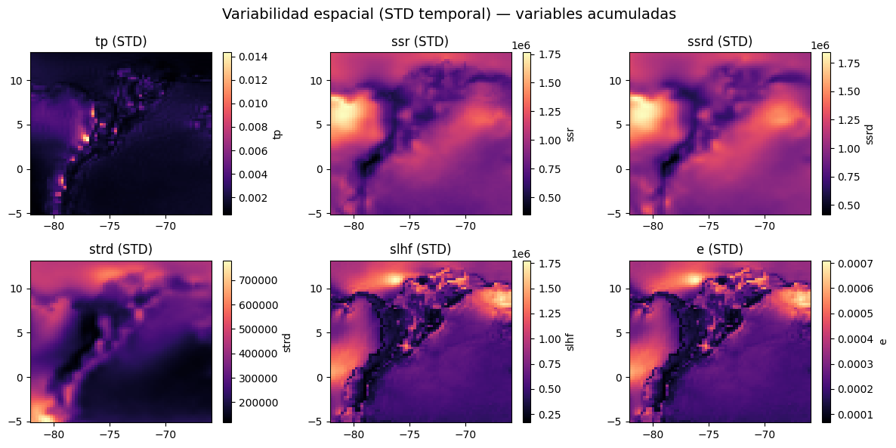
tp — Precipitación total
STD muy alta y espacialmente puntual sobre los Andes, con un patrón pixelado característico de la convección orográfica intensa. La precipitación oceánica es más homogénea. Esta variable requiere tratamiento especial dada su naturaleza intermitente y distribución sesgada.
ssr / ssrd — Radiación solar neta y descendente
Patrón suave y estructurado con máxima variabilidad en la franja tropical continental (~5°N). La gradiente N-S clara refleja el movimiento estacional de la ITCZ modulando la nubosidad. Ambas variables presentan patrones casi idénticos, indicando alta colinealidad entre ellas.
strd — Radiación de onda larga descendente
Variabilidad moderada, mayor sobre tierra. Relacionada con variaciones de temperatura atmosférica y contenido de humedad en la columna.
slhf — Flujo de calor latente superficial
Alta STD en zonas costeras y oceánicas tropicales, especialmente en el Pacífico. Conecta directamente con la variabilidad de SST y viento. Los mínimos sobre tierra sugieren que el flujo latente continental está más limitado por la disponibilidad de humedad del suelo.
e — Evaporación
Patrón muy similar a slhf, lo cual es físicamente consistente (variables acopladas). Alta STD en el Pacífico Este tropical refuerza la posible huella de variabilidad interanual (ENSO).
Mapa de tendencia espacial#
Dado que solo las variables térmicas (t2m y sst) presentan tendencias espacialmente coherentes y estadísticamente significativas en la región de estudio,ademas de ser las variables princiaples, el análisis posterior de tendencia espacial se centra exclusivamente en estas variables, evitando interpretaciones sobre campos dominados por ruido o alta variabilidad interna.
# Metadatos por variable: (etiqueta unidades, factor conversión, rango colorbar)
var_meta = {
"t2m": ("°C/década", 12 * 10, (-0.5, 0.5)),
"sst": ("°C/década", 12 * 10, (-0.5, 0.5)),
"msl": ("hPa/década", 12 * 10, (-2.0, 2.0)),
"u10": ("m/s/década", 12 * 10, (-0.3, 0.3)),
"v10": ("m/s/década", 12 * 10, (-0.3, 0.3)),
"tp": ("mm/década", 12 * 10 * 1000, (-10, 10)), # m → mm
"ssr": ("W·h/m²/década", 12 * 10, (-5e6, 5e6)),
"ssrd": ("W·h/m²/década", 12 * 10, (-5e6, 5e6)),
"strd": ("W·h/m²/década", 12 * 10, (-5e6, 5e6)),
"slhf": ("W·h/m²/década", 12 * 10, (-5e6, 5e6)),
"e": ("mm/década", 12 * 10 * 1000, (-5, 5)), # m → mm
}
# ── Variables térmicas ─────────────────────────────────────────────
vars_temp = ["t2m", "sst"]
var_meta_temp = {
k: v for k, v in var_meta.items() if k in vars_temp
}
# ── Paso 1: calcular tendencia por celda para cada variable ───────────────────
lats = ds['t2m'].latitude.values
lons = ds['t2m'].longitude.values
nlat, nlon = len(lats), len(lons)
# Preparar dataset unificado sin dimensión step
ds_step_integrated = ds[vars_step].sum(dim="step", skipna=True)
ds_full = xr.merge([ds[vars_no_step], ds_step_integrated])
results = {} # var → {"slopes": ..., "pvalues": ...}
for var in var_meta_temp:
print(f" Calculando Mann-Kendall: {var}...", end=" ")
da = ds_full[var]
slopes_v = np.full((nlat, nlon), np.nan)
pvalues_v = np.full((nlat, nlon), np.nan)
factor, _ = var_meta[var][1], var_meta[var][2] # desempacar
for i, lat in enumerate(lats):
for j, lon in enumerate(lons):
serie = da.sel(latitude=lat, longitude=lon).values
if not np.isnan(serie).any():
res = mk_test(serie)
slopes_v[i, j] = res.slope * var_meta[var][1]
pvalues_v[i, j] = res.p
results[var] = {"slopes": slopes_v, "pvalues": pvalues_v}
print("\nCálculo completado.")
Calculando Mann-Kendall: t2m... Calculando Mann-Kendall: sst...
Cálculo completado.
all_vars = list(var_meta_temp.keys())
n_vars = len(all_vars)
n_cols = 2 # slope | significativo
n_rows = n_vars # una fila por variable
fig, axes = plt.subplots(
n_rows, n_cols,
figsize=(18, 4.5 * n_rows),
subplot_kw={"projection": ccrs.PlateCarree()},
constrained_layout=True
)
cmap = "RdBu_r"
p_thresh = 0.05
for row, var in enumerate(all_vars):
unit, factor, (vmin, vmax) = var_meta[var]
slopes_v = results[var]["slopes"]
pvalues_v = results[var]["pvalues"]
sig_mask = np.where(pvalues_v < p_thresh, slopes_v, np.nan)
levels = np.linspace(vmin, vmax, 21)
for col, (data, titulo_col) in enumerate([
(slopes_v, f"Sen's slope — {var} [{unit}]"),
(sig_mask, f"Significativo p < {p_thresh} — {var} [{unit}]"),
]):
ax = axes[row, col]
cf = ax.contourf(
lons, lats, data,
levels=levels,
cmap=cmap,
extend="both",
transform=ccrs.PlateCarree()
)
ax.coastlines(resolution="50m", linewidth=0.8)
ax.add_feature(cfeature.BORDERS, linewidth=0.4)
ax.add_feature(cfeature.LAND, facecolor="lightgray", zorder=0)
ax.add_feature(cfeature.OCEAN, facecolor="aliceblue", zorder=0)
ax.add_feature(cfeature.RIVERS, linewidth=0.3, edgecolor="steelblue")
# Gridlines
gl = ax.gridlines(draw_labels=True, linewidth=0.4,
color="gray", alpha=0.5, linestyle="--")
gl.top_labels = False
gl.right_labels = False
ax.set_title(titulo_col, fontsize=10, fontweight="bold")
plt.colorbar(cf, ax=ax, orientation="vertical",
shrink=0.85, pad=0.02, label=unit)
fig.suptitle(
"Tendencia espacial Mann-Kendall por celda — Todas las variables\n"
f"Región Caribe · ERA5 · 1976–2025 (p < {p_thresh})",
fontsize=14, fontweight="bold",ha="center",x=0.5
)
plt.show()
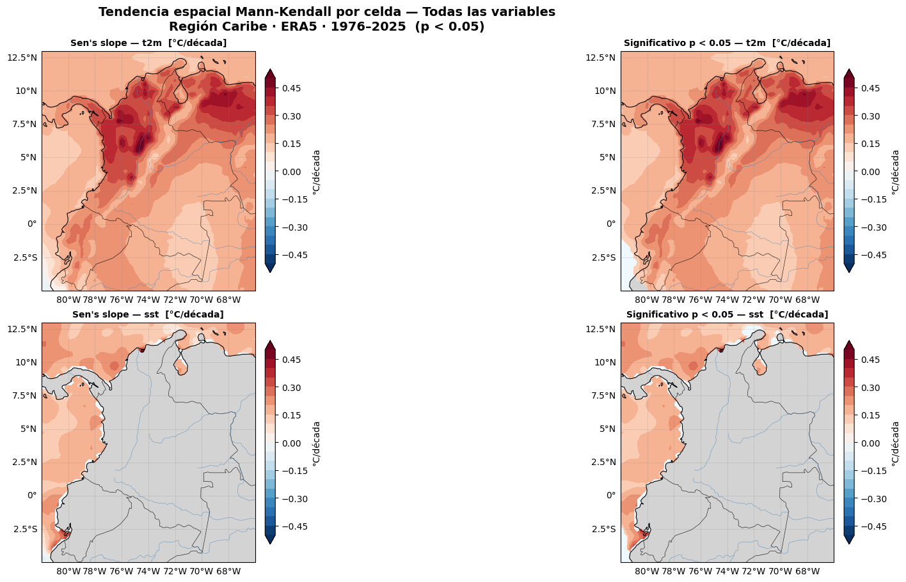
Los mapas de tendencia espacial obtenidos mediante la prueba de Mann–Kendall por celda, junto con la pendiente de Sen, evidencian una señal térmica clara y robusta en la región Caribe durante el período 1976–2025.
Temperatura del aire a 2 m (t2m) El campo de la pendiente de Sen muestra tendencias positivas generalizadas en prácticamente toda la región de estudio, con valores que alcanzan aproximadamente 0.4–0.5 °C por década en amplias zonas del norte y centro del dominio.
El mapa de significancia (p < 0.05) revela que la mayor parte de estas tendencias son estadísticamente significativas, lo que indica que el aumento de la temperatura del aire no solo es persistente en el tiempo, sino también espacialmente coherente.
Las mayores magnitudes se concentran sobre el norte de Colombia y áreas adyacentes al Caribe, lo que sugiere un calentamiento regional sostenido, consistente con señales de cambio climático observadas a escala global y regional.Temperatura superficial del mar (sst) La sst presenta igualmente tendencias positivas en el dominio oceánico, con valores comparables a los de t2m, aunque con una mayor heterogeneidad espacial.
Las áreas con significancia estadística (p < 0.05) se concentran principalmente en sectores específicos del Caribe, indicando que el calentamiento oceánico es robusto pero no completamente homogéneo en toda la región.
Aun así, la coincidencia entre tendencias positivas de t2m y sst sugiere un acoplamiento térmico atmósfera–océano, reforzando la evidencia de un calentamiento integrado del sistema climático regional.
PCA con EOF#
# Calcular anomalías mensuales en el campo 3D
t2m_anom = ds['t2m'].groupby('time.month') - ds['t2m'].groupby('time.month').mean('time')
# Reshape: (time, lat*lon)
ntime = t2m_anom.shape[0]
data2d = t2m_anom.values.reshape(ntime, -1)
# Eliminar columnas con NaN (tierra en SST, etc.)
mask_valid = ~np.isnan(data2d).any(axis=0)
data_clean = data2d[:, mask_valid]
scaler = StandardScaler()
data_scaled = scaler.fit_transform(data_clean)
pca = PCA(n_components=4)
pca.fit(data_scaled)
scores = pca.transform(data_scaled)
print("Varianza explicada por cada EOF:")
for i, v in enumerate(pca.explained_variance_ratio_):
print(f" EOF{i+1}: {v*100:.1f}% (acumulado: {pca.explained_variance_ratio_[:i+1].sum()*100:.1f}%)")
Varianza explicada por cada EOF:
EOF1: 64.8% (acumulado: 64.8%)
EOF2: 9.4% (acumulado: 74.1%)
EOF3: 4.8% (acumulado: 79.0%)
EOF4: 3.9% (acumulado: 82.9%)
eof1_2d = np.full(data2d.shape[1], np.nan)
eof1_2d[mask_valid] = pca.components_[0]
eof1_map = eof1_2d.reshape(len(lats), len(lons))
fig, axes = plt.subplots(2, 2, figsize=(14, 8),
subplot_kw={'projection': ccrs.PlateCarree()})
axes = axes.flatten()
for k in range(4):
eof_2d = np.full(data2d.shape[1], np.nan)
eof_2d[mask_valid] = pca.components_[k]
eof_map = eof_2d.reshape(len(lats), len(lons))
im = axes[k].contourf(lons, lats, eof_map, levels=20,
cmap='RdBu_r', transform=ccrs.PlateCarree())
axes[k].coastlines(resolution='50m', linewidth=0.8)
axes[k].add_feature(cfeature.BORDERS, linewidth=0.4)
plt.colorbar(im, ax=axes[k])
var_exp = pca.explained_variance_ratio_[k] * 100
axes[k].set_title(f"EOF{k+1} — {var_exp:.1f}% varianza")
fig.suptitle("EOFs espaciales — anomalías t2m", fontsize=13)
plt.tight_layout()
plt.show()
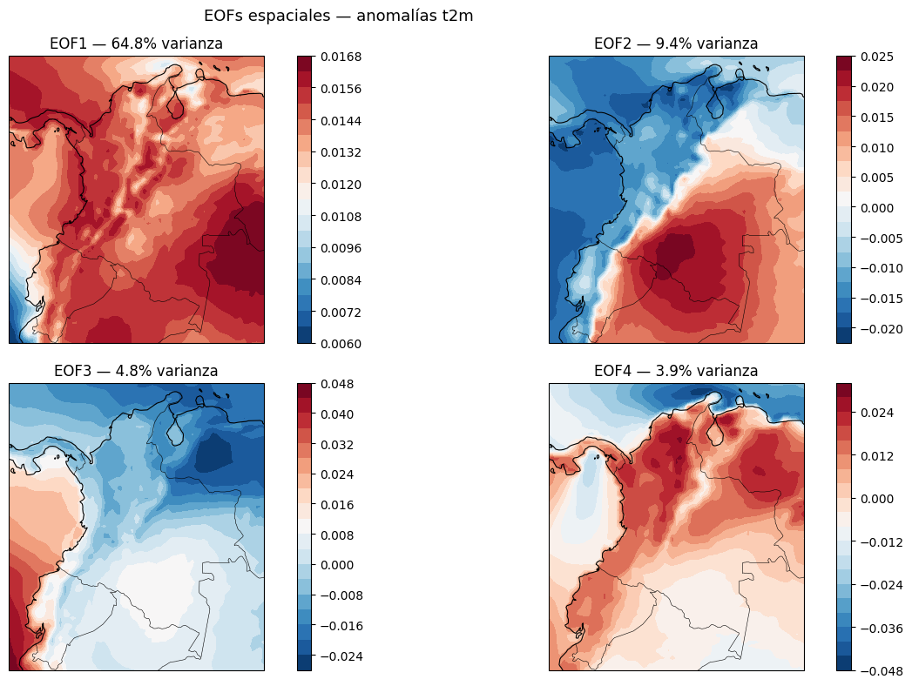
Los EOFs (Empirical Orthogonal Functions) permiten identificar los principales patrones espaciales de variabilidad de la temperatura a 2 m (t2m), junto con la fracción de varianza que explica cada uno.
EOF1 — 64.8 % de la varianza
Es el modo dominante del sistema.
Presenta un patrón espacial coherente, con anomalías del mismo signo en la mayor parte del dominio.
Representa una señal de gran escala, asociada a forzamientos regionales o globales.
Puede interpretarse como el componente principal del calentamiento/enfriamiento generalizado.
EOF2 — 9.4 % de la varianza
Muestra un patrón dipolar, con regiones que presentan anomalías de signo opuesto.
Indica contrastes espaciales (por ejemplo, costa–interior o norte–sur).
Está asociado a redistribuciones regionales de temperatura, posiblemente ligadas a patrones de circulación atmosférica.
EOF3 — 4.8 % de la varianza
Presenta una estructura más fragmentada y localizada.
Representa procesos secundarios, como efectos orográficos o variabilidad regional.
Su interpretación física es menos robusta que la de los primeros modos.
EOF4 — 3.9 % de la varianza
Corresponde a variabilidad de menor escala espacial.
Puede reflejar señales residuales estacionales o ruido estructurado.
Generalmente no se utiliza de forma aislada para conclusiones climáticas.
Conclusión general
Los dos primeros EOFs explican aproximadamente 74 % de la varianza total, lo que indica que la variabilidad de t2m está dominada por pocos patrones espaciales principales.
EOF1 describe la variabilidad térmica de gran escala, mientras que EOF2 introduce contrastes regionales clave.
EOF3 y EOF4 aportan detalle adicional, pero con menor peso interpretativo.
fig, axes = plt.subplots(4, 1, figsize=(14, 8), sharex=True)
for k, ax in enumerate(axes):
ax.plot(df_ts.index, scores[:, k], linewidth=0.8, color='steelblue')
ax.axhline(0, color='black', linewidth=0.6)
ax.set_ylabel(f"PC{k+1}", fontsize=9)
ax.grid(alpha=0.3)
fig.suptitle("Series temporales de componentes principales (PCs)", fontsize=13)
axes[-1].set_xlabel("Tiempo")
plt.tight_layout()
plt.show()
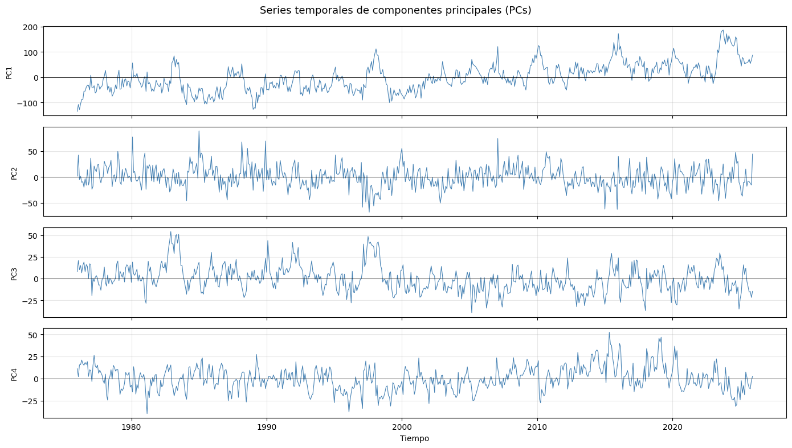
Las Componentes Principales (PCs) describen la evolución temporal de los patrones espaciales identificados por los EOFs de las anomalías de t2m. Su análisis permite distinguir entre señales dominantes, variabilidad natural y modos secundarios.
PC1 — Modo dominante
Presenta las mayores amplitudes, coherentes con el alto porcentaje de varianza explicado por el EOF1.
Muestra una variabilidad de baja frecuencia, con periodos prolongados de valores positivos y negativos.
Se observa una tendencia positiva hacia los años más recientes, lo que sugiere un fortalecimiento del patrón térmico de gran escala.
Indica la presencia de una señal climática persistente, asociada a calentamiento/enfriamiento generalizado.
PC2 — Variabilidad interanual
Oscila alrededor de cero sin una tendencia clara.
Exhibe cambios frecuentes de signo, característicos de variabilidad interanual o interdecadal.
Está asociada a contrastes espaciales del EOF2, posiblemente vinculados a cambios en la circulación atmosférica.
PC3 — Procesos secundarios
Amplitud moderada, menor que PC1 y PC2.
Presenta episodios puntuales de valores extremos, pero sin persistencia temporal marcada.
Representa procesos regionales o locales, con menor relevancia en la variabilidad total.
PC4 — Variabilidad residual
Señal más ruidosa y de menor coherencia temporal.
Oscila rápidamente alrededor de cero.
Puede interpretarse como variabilidad residual o ruido estructurado.
Dimension Multivariable#
Analisis univariado#
realizamos analisis univariado
df_ts.describe()
| t2m | sst | msl | u10 | v10 | tp | ssr | ssrd | strd | slhf | e | month | |
|---|---|---|---|---|---|---|---|---|---|---|---|---|
| count | 600.000000 | 600.000000 | 600.000000 | 600.000000 | 600.000000 | 600.000000 | 6.000000e+02 | 6.000000e+02 | 6.000000e+02 | 6.000000e+02 | 600.000000 | 600.000000 |
| mean | 297.909607 | 300.318115 | 101147.546875 | -0.742544 | -0.278996 | 0.003810 | 7.693591e+06 | 8.685372e+06 | 1.761379e+07 | -4.188290e+06 | -0.001675 | 6.500000 |
| std | 0.548682 | 0.619823 | 90.305794 | 0.466263 | 0.612235 | 0.000865 | 5.408206e+05 | 6.150406e+05 | 1.758951e+05 | 2.857795e+05 | 0.000114 | 3.454933 |
| min | 296.549591 | 298.600647 | 100907.312500 | -1.779237 | -1.536195 | 0.001121 | 6.396513e+06 | 7.201546e+06 | 1.704058e+07 | -4.849683e+06 | -0.001939 | 1.000000 |
| 25% | 297.547256 | 299.910156 | 101085.119141 | -1.101839 | -0.866543 | 0.003213 | 7.310394e+06 | 8.259488e+06 | 1.752116e+07 | -4.409025e+06 | -0.001763 | 3.750000 |
| 50% | 297.869873 | 300.344269 | 101136.578125 | -0.736899 | -0.079616 | 0.003922 | 7.684014e+06 | 8.681974e+06 | 1.762778e+07 | -4.176876e+06 | -0.001670 | 6.500000 |
| 75% | 298.237640 | 300.734055 | 101209.017578 | -0.397913 | 0.249479 | 0.004435 | 8.070790e+06 | 9.113400e+06 | 1.773584e+07 | -3.960422e+06 | -0.001584 | 9.250000 |
| max | 299.697693 | 302.216858 | 101398.062500 | 0.582860 | 0.716381 | 0.005561 | 9.443648e+06 | 1.068164e+07 | 1.813644e+07 | -3.562258e+06 | -0.001424 | 12.000000 |
realizamos boxplots a nivel mensual de cada una de las variables
def boxplot_mensual(df, var):
plt.figure(figsize=(10,4))
sns.boxplot(
x="month",
y=var,
data=df,
showfliers=False
)
plt.title(f"Distribución mensual de {var}")
plt.xlabel("Mes")
plt.ylabel(var)
plt.grid(alpha=0.3)
plt.show()
def boxplots_grupo(df, variables, titulo):
n = len(variables)
fig, axes = plt.subplots(n, 1, figsize=(10, 3*n), sharex=True)
if n == 1:
axes = [axes]
for ax, var in zip(axes, variables):
sns.boxplot(
x="month",
y=var,
data=df,
showfliers=False,
ax=ax
)
ax.set_title(var)
ax.grid(alpha=0.3)
fig.suptitle(titulo, fontsize=14)
plt.tight_layout()
plt.show()
for grupo, vars_grupo in grupos.items():
boxplots_grupo(
df_ts,
vars_grupo,
f"{grupo} - Distribución mensual"
)
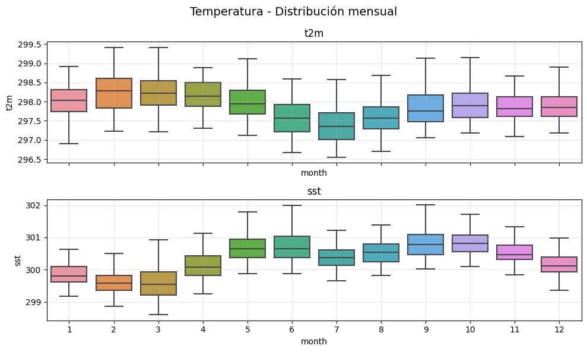
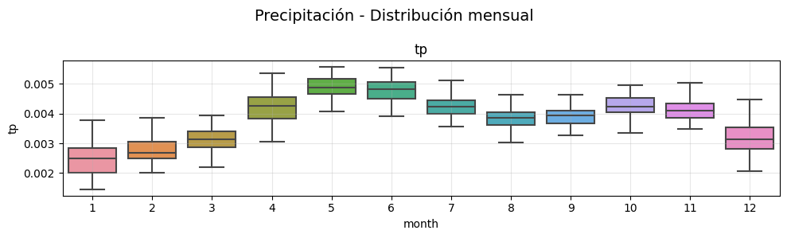
Analisis Normalidad#
vars_analizar = [v for v in df_ts.columns if v != "month"]
resultados_normalidad = []
for var in vars_analizar:
serie = df_ts[var].dropna().values
stat_sw, p_sw = stats.shapiro(serie)
stat_da, p_da = stats.normaltest(serie) # D'Agostino K²
stat_ks, p_ks = stats.kstest(
(serie - serie.mean()) / serie.std(), "norm"
)
skewness = stats.skew(serie)
kurtosis = stats.kurtosis(serie) # exceso de kurtosis (0 = normal)
resultados_normalidad.append({
"Variable" : var,
"Shapiro p-value" : round(p_sw, 4),
"Normal (SW)" : "normal" if p_sw > 0.05 else "no_normal",
"D'Agostino p" : round(p_da, 4),
"Normal (DA)" : "normal" if p_da > 0.05 else "no_normal",
"KS p-value" : round(p_ks, 4),
"Normal (KS)" : "normal" if p_ks > 0.05 else "no_normal",
"Skewness" : round(skewness, 3),
"Kurtosis (exc)" : round(kurtosis, 3),
})
df_normalidad = pd.DataFrame(resultados_normalidad).set_index("Variable")
print("=" * 70)
print("RESUMEN — Tests de normalidad (α = 0.05)")
print("=" * 70)
print(df_normalidad.to_string())
======================================================================
RESUMEN — Tests de normalidad (α = 0.05)
======================================================================
Shapiro p-value Normal (SW) D'Agostino p Normal (DA) KS p-value Normal (KS) Skewness Kurtosis (exc)
Variable
t2m 0.0002 no_normal 0.0003 no_normal 0.0913 normal 0.386 0.260
sst 0.6607 normal 0.8114 normal 0.9669 normal -0.063 -0.010
msl 0.0000 no_normal 0.0003 no_normal 0.0517 normal 0.319 -0.412
u10 0.0000 no_normal 0.0000 no_normal 0.1079 normal 0.162 -0.659
v10 0.0000 no_normal 0.0000 no_normal 0.0000 no_normal -0.415 -1.221
tp 0.0000 no_normal 0.0001 no_normal 0.0146 no_normal -0.419 -0.312
ssr 0.0168 no_normal 0.0400 no_normal 0.6761 normal 0.131 -0.371
ssrd 0.0219 no_normal 0.0546 normal 0.5945 normal 0.116 -0.363
strd 0.0000 no_normal 0.0000 no_normal 0.0587 normal -0.417 0.480
slhf 0.0000 no_normal 0.0000 no_normal 0.0720 normal -0.123 -0.861
e 0.0000 no_normal 0.0000 no_normal 0.0720 normal -0.123 -0.861
Análisis de la normalidad de las variables
La tabla de tests de normalidad (α = 0.05) evidencia que la mayoría de las variables climáticas analizadas no siguen una distribución normal, especialmente según los tests de Shapiro–Wilk y D’Agostino–Pearson, los cuales presentan mayor sensibilidad para detectar desviaciones de la normalidad en series temporales extensas.
La variable sst es la única que cumple el supuesto de normalidad de forma consistente en los tres tests aplicados, además de presentar valores de asimetría y curtosis cercanos a cero, lo que indica una distribución aproximadamente normal. En contraste, variables como tp y v10 rechazan la hipótesis de normalidad en todos los tests, reflejando distribuciones asimétricas y con desviaciones significativas respecto a la normal.
El test de Kolmogorov–Smirnov tiende a aceptar la normalidad en más variables; sin embargo, este comportamiento es esperable debido a su menor potencia estadística, por lo que no se considera determinante frente a los resultados de Shapiro–Wilk y D’Agostino–Pearson.
Los valores de skewness y curtosis indican que, aunque algunas variables presentan distribuciones visualmente cercanas a la normal, existen desviaciones estadísticas suficientes para rechazar dicho supuesto. Este comportamiento es característico de datasets climáticos, donde pequeñas desviaciones son detectadas en muestras grandes.
En conjunto, estos resultados justifican el uso de métodos no paramétricos, como el test de Mann–Kendall y la estimación de la pendiente de Sen, para el análisis de tendencias, al no cumplirse de manera generalizada el supuesto de normalidad en las series analizadas.
Analisis outliers o eventos extremos#
Para variables con distribuciones no normales y para las cuales la frecuencia de extremos definida por percentiles resulta poco informativa, se empleó un criterio robusto basado en la mediana y la desviación absoluta mediana (MAD). Las anomalías robustas se calcularon como:
Z_rob = 0.6745 · (X − mediana) / MAD
considerándose eventos extremos aquellos con |Z_rob| > 2.5. Este enfoque permite identificar regiones con mayor ocurrencia de eventos extremos sin imponer una frecuencia uniforme en el dominio espacial.
# Variables cuasi-normales → Z-score clásico
vars_zscore = [
"sst", "t2m", "msl", "u10", "ssr", "ssrd"
]
# Variables no normales → Z-score robusto
vars_robusto = [
"tp", "v10", "strd", "slhf", "e"
]
all_vars = vars_zscore + vars_robusto
resultados_extremos = {}
n_vars = len(all_vars)
ncols = 2
nrows = int(np.ceil(n_vars / ncols))
fig, axes = plt.subplots(
nrows=nrows,
ncols=ncols,
figsize=(7 * ncols, 4 * nrows),
constrained_layout=True
)
axes = axes.flatten()
for i, var in enumerate(all_vars):
if var in vars_zscore:
# ── Z-score clásico ─────────────────────────────
z = (ds[var] - ds[var].mean("time")) / ds[var].std("time")
extremos = z.where(np.abs(z) > 2)
metodo = "|Z| > 2"
elif var in vars_robusto:
# ── Z_robusto ─────────────────────────────────
median = ds[var].median("time")
mad = np.abs(ds[var] - median).median("time")
z_rob = 0.6745 * (ds[var] - median) / mad
extremos = z_rob.where(np.abs(z_rob) > 2.5)
metodo = "|Z| > 2.5"
# Conteo temporal
resultados_extremos[var] = extremos.count("time")
# Plot
resultados_extremos[var].plot(ax=axes[i])
axes[i].set_title(f"{var} | Frecuencia de extremos ({metodo})")
axes[i].set_xlabel("")
axes[i].set_ylabel("")
# Eliminar ejes vacíos
for j in range(i + 1, len(axes)):
fig.delaxes(axes[j])
plt.show()
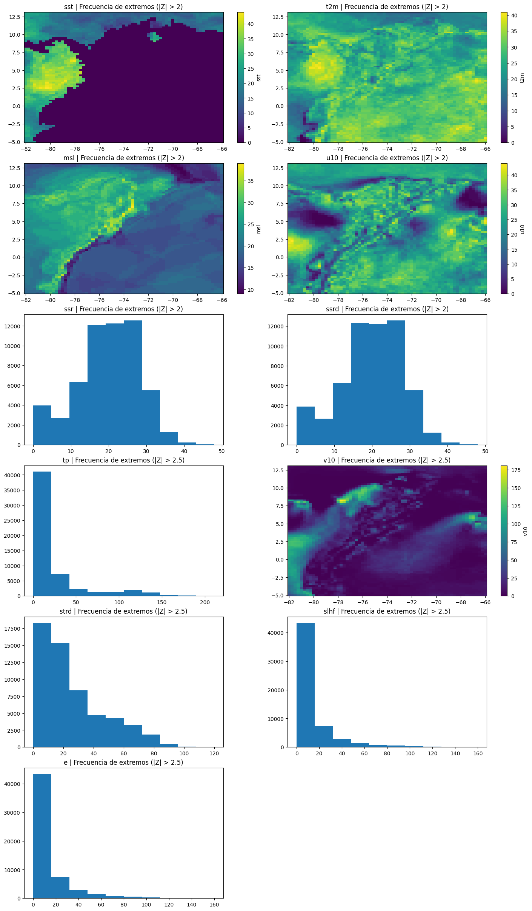
Análisis de la frecuencia espacial de eventos extremos
La Figura presenta la distribución espacial de la frecuencia de eventos extremos para distintas variables atmosféricas y oceánicas, empleando un criterio adaptativo según la naturaleza estadística de cada variable. Para aquellas con comportamiento cuasi-gaussiano (SST, T2M, MSL, U10, SSR y SSRD) se utilizó el umbral de anomalías estandarizadas clásicas (|Z| > 2), mientras que para variables no normales o con distribuciones asimétricas (TP, V10, STRD, SLHF y E) se aplicó un criterio robusto basado en la mediana y la desviación absoluta mediana (|Z_rob| > 2.5).
Variables termodinámicas de gran escala
SST muestra una clara diferenciación espacial, con una mayor frecuencia de eventos extremos concentrada en el sector occidental del dominio, asociada a regiones de mayor variabilidad térmica oceánica. Las áreas centrales presentan frecuencias significativamente menores, indicando un comportamiento más estable.
T2M exhibe un patrón más homogéneo, aunque con máximos relativos en regiones continentales y costeras, reflejando la influencia combinada de forzantes sinópticos y procesos locales.
MSL presenta una estructura espacial coherente, con bandas de mayor frecuencia alineadas con gradientes de presión persistentes, lo que sugiere una modulación por sistemas de circulación de gran escala.
Variables dinámicas del viento
U10 revela una marcada heterogeneidad espacial, con regiones bien definidas de alta frecuencia de extremos, asociadas a zonas de mayor actividad del viento zonal y a la influencia de circulaciones regionales.
V10, evaluada mediante un criterio robusto, muestra por primera vez una estructura espacial no homogénea. Se identifican núcleos de alta frecuencia en sectores específicos del dominio, lo que indica regiones con mayor variabilidad del viento meridional y episodios recurrentes de intensificación, evitando la artificial homogeneidad observada al usar percentiles.
Flujos radiativos y de superficie
SSR y SSRD presentan distribuciones similares, con una mayor concentración de extremos en rangos intermedios de frecuencia y una menor ocurrencia de eventos extremos persistentes, reflejando la naturaleza relativamente estable de los flujos radiativos entrantes.
STRD muestra una distribución asimétrica de frecuencias, con predominio de valores bajos y una cola hacia frecuencias altas, lo que sugiere que los eventos extremos radiativos de onda larga descendente son relativamente poco frecuentes pero intensos en regiones específicas.
Variables de intercambio superficie–atmósfera
SLHF y E presentan distribuciones altamente sesgadas, con la mayoría del dominio caracterizado por una baja frecuencia de extremos y un número reducido de regiones donde estos eventos ocurren de manera recurrente. Este comportamiento es consistente con la fuerte dependencia de estas variables de condiciones locales de superficie y humedad.
TP exhibe una marcada asimetría, con predominio de bajas frecuencias y pocos píxeles con ocurrencias elevadas, reflejando el carácter intermitente y altamente localizado de los eventos de precipitación intensa.
Correlaciones#
corr_matrix = df_ts.corr()
plt.figure(figsize=(8,6))
plt.imshow(corr_matrix, cmap="coolwarm", vmin=-1, vmax=1)
plt.colorbar(label="Correlación")
plt.xticks(range(len(corr_matrix)), corr_matrix.columns, rotation=90)
plt.yticks(range(len(corr_matrix)), corr_matrix.columns)
plt.title("Correlación temporal entre variables (promedio espacial)")
# Anotar cada celda con su valor
for i in range(len(corr_matrix)):
for j in range(len(corr_matrix)):
valor = corr_matrix.iloc[i, j]
color = "white" if abs(valor) > 0.6 else "black" # contraste según intensidad
plt.text(j, i, f"{valor:.2f}", ha="center", va="center", fontsize=8, color=color)
plt.tight_layout()
plt.show()
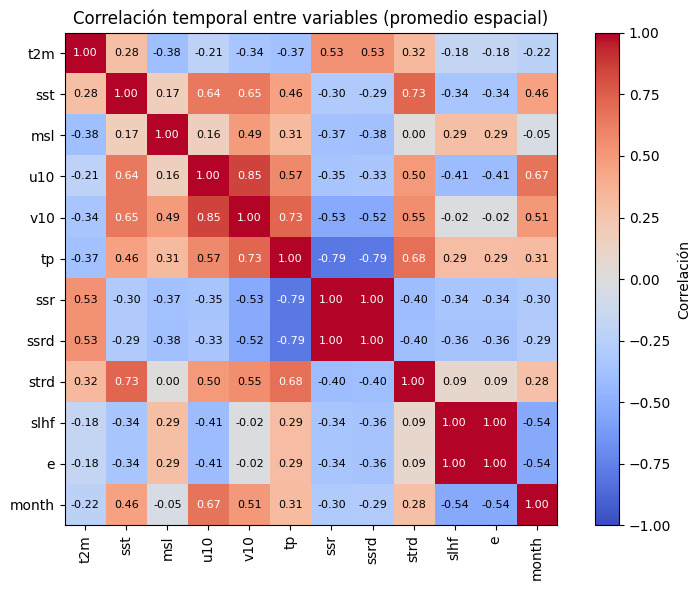
Bloque radiativo y redundancia temporal
Se observa una correlación prácticamente perfecta entre las variables radiativas
ssryssrd, así como entre los flujos turbulentosslhfye. Esta relación indica que dichas variables comparten esencialmente la misma señal temporal a escala mensual, lo que evidencia redundancia informativa en el contexto del EDA multivariable. Desde un punto de vista físico, esto es esperable dado que estas variables describen procesos energéticos estrechamente acoplados.En consecuencia, para análisis posteriores como reducción de dimensionalidad o modelado estadístico, resulta razonable considerar la selección de una variable representativa por cada par altamente correlacionado.
Precipitación como variable integradora
La precipitación total (
tp) presenta correlaciones positivas moderadas a altas con las componentes del viento (u10,v10) y con la radiación de onda larga descendente (strd), mientras que muestra una fuerte correlación negativa con las variables radiativas de onda corta (ssr,ssrd). Este patrón sugiere que los meses más lluviosos están asociados a una mayor actividad dinámica y a una reducción de la radiación solar entrante, coherente con la presencia de nubosidad y procesos convectivos.En este sentido,
tpactúa como una variable integradora, conectando la dinámica atmosférica con el balance energético del sistema.Temperatura y balance energético
La temperatura a 2 metros (
t2m) muestra correlaciones positivas con las variables radiativas y negativas con la precipitación y la presión a nivel del mar (msl). Este comportamiento indica que los meses más cálidos están asociados a mayores aportes radiativos y condiciones más secas, mientras que los meses más fríos coinciden con una mayor nubosidad y precipitación.Este patrón refuerza la interpretación de que la variabilidad térmica mensual está fuertemente controlada por el balance energético superficial.
Rol modulador de la temperatura superficial del mar
La temperatura superficial del mar (
sst) presenta correlaciones positivas con las componentes del viento, la precipitación y la radiación de onda larga, lo que sugiere un papel activo del océano en la modulación de la dinámica atmosférica y de los flujos de energía. Dado el carácter costero de la región analizada, esta relación resulta físicamente consistente y destaca la importancia del acoplamiento océano-atmósfera en la variabilidad climática mensual.Dinámica atmosférica
Las componentes zonal y meridional del viento (
u10yv10) presentan una correlación elevada entre sí, indicando una estructura dinámica coherente. Además, ambas variables se relacionan de forma significativa con la precipitación y con variables energéticas, lo que sugiere que la circulación atmosférica superficial desempeña un papel clave en la organización de los regímenes mensuales.Presión a nivel del mar
La presión a nivel del mar (
msl) muestra correlaciones moderadas o débiles con la mayoría de las variables, lo que indica que actúa principalmente como una variable moduladora del sistema, más que como un factor dominante de la variabilidad mensual. No obstante, su relación negativa con la temperatura es consistente con la estructura estacional del clima regional.
vars_modelo = ['sst', 'msl', 'u10', 'v10', 'tp', 'slhf', 'ssr', 'strd', 'e']
df_vif = df_ts[vars_modelo].dropna()
vif_data = pd.DataFrame({
'Variable': vars_modelo,
'VIF': [variance_inflation_factor(df_vif.values, i)
for i in range(len(vars_modelo))]
}).sort_values('VIF', ascending=False)
print(vif_data.to_string(index=False))
print("\nRegla: VIF > 10 → multicolinealidad severa | VIF > 5 → moderada")
Variable VIF
e 5.648280e+10
slhf 3.724788e+09
sst 1.278397e+06
msl 8.530610e+05
strd 6.271728e+04
ssr 6.693073e+02
tp 1.518049e+02
u10 3.344071e+01
v10 8.717758e+00
Regla: VIF > 10 → multicolinealidad severa | VIF > 5 → moderada
Podemos observar que los valores de VIF complementan lo que se ha visto antes en la matriz de correlaciones:
Multicolinealidad extrema
Las variables e, slhf, sst, msl y strd presentan valores de VIF varios órdenes de magnitud mayores que 10, lo que indica:
Dependencia lineal muy fuerte entre ellas
Información altamente redundante
Imposibilidad de interpretar coeficientes en modelos lineales
Estas variables representan procesos físicamente acoplados (balance energético, flujos superficie–atmósfera y respuesta sinóptica), por lo que este resultado es esperado en datasets climáticos como ERA5.
Multicolinealidad severa
Las variables ssr, tp y u10 muestran VIF elevados (≫10), indicando que:
Aportan señal climática relevante
Pero no de forma independiente respecto a otras variables
Su uso conjunto en modelos lineales sigue siendo problemático.
Multicolinealidad moderada
La variable v10 presenta un VIF ≈ 9, lo que sugiere:
Dependencia moderada con el resto de variables
Puede incluirse con precaución en análisis lineales
Conclusiones del EDA#
El análisis exploratorio realizado sobre el dataset ERA5 para la región del Caribe (1976–2025) constituye una caracterización exhaustiva del sistema climático en sus tres dimensiones fundamentales: temporal, espacial y multivariable. Los hallazgos obtenidos no solo describen el estado y la dinámica del sistema, sino que definen de forma directa las decisiones de diseño para la etapa de modelado.
Calidad e integridad del dataset
El dataset presenta una integridad estructural sólida. La única excepción relevante son los valores faltantes en sst, que son físicamente coherentes dado que esta variable solo está definida sobre superficies oceánicas. La serie temporal es continua, sin saltos ni meses faltantes, con tipos de datos consistentes (float32) y coordenadas geográficas válidas. Este punto de partida garantiza que el pipeline de preprocesamiento opera sobre información confiable.
Señal climática de la variable objetivo
La temperatura del aire a 2 metros (t2m), variable objetivo del proyecto, exhibe la señal más robusta y coherente del dataset. El test de Mann–Kendall confirma una tendencia creciente estadísticamente significativa con una pendiente de Sen de aproximadamente +0.21 °C por década, validada tanto en la serie temporal regional como en los mapas celda a celda. El análisis de anomalías revela una transición estructural entre décadas: predominio de anomalías negativas en los años 70 y 80, seguido de un dominio casi absoluto de anomalías positivas a partir del año 2000, con el período 2023–2024 como el más cálido del registro histórico (anomalía > +1.0 °C). Esta señal no es ruido estadístico: es una tendencia climática sostenida y espacialmente coherente sobre el norte de Colombia y el Caribe adyacente.
Estructura temporal y predictibilidad latente
El análisis espectral identifica un ciclo anual dominante (12 meses) en t2m y un componente semi-anual secundario (6 meses), mientras que la ACF muestra una autocorrelación significativa que se extiende más allá de los 12 lags. Las anomalías de sst presentan una mayor persistencia temporal que las de t2m, reflejo de la memoria térmica del océano. Este comportamiento es fundamental: implica que los valores pasados de la temperatura —tanto del aire como del mar— contienen información predictiva real, justificando directamente la construcción de lags como predictores. Los lags seleccionados en el pipeline (1, 2, 3, 6 y 12 meses para sst y t2m) están alineados con la estructura de autocorrelación observada. El dataset es estacionario en anomalías, condición necesaria para el modelado supervisado.
Estructura espacial y representación regional#
El análisis EOF revela que la variabilidad de t2m está dominada por dos modos principales que acumulan el 74% de la varianza total: un modo de gran escala (EOF1, 64.8%) asociado al calentamiento generalizado, y un modo dipolar (EOF2, 9.4%) que introduce contrastes regionales. Esta compresión de la variabilidad en pocos modos justifica el colapso espacial mediante promedios aritméticos aplicado en el preprocesamiento, sin pérdida crítica de información. La reducción de la dimensión espacial a series temporales es metodológicamente válida dado que el primer modo domina ampliamente. La variabilidad residual de EOF3 y EOF4 puede asociarse a efectos orográficos locales que el promedio espacial suaviza adecuadamente.
Estructura multivariable y selección de predictores
El análisis de correlaciones y VIF expone un sistema con multicolinealidad severa entre varios grupos de variables. Los pares ssr–ssrd y slhf–e presentan correlaciones casi perfectas, representando redundancia informativa pura. Los valores de VIF para variables como e, slhf, sst, msl y strd son varios órdenes de magnitud superiores a 10, lo que hace inviable su uso simultáneo en modelos lineales. Este diagnóstico llevó a una selección razonada de predictores en el pipeline: de las once variables originales se retienen aquellas con mayor aporte informativo independiente (sst, msl, u10, v10, tp, ssr, strd, slhf), eliminando las redundantes (ssrd, e). La incorporación del índice RONI como predictor externo complementa este conjunto con una señal de teleconexión oceánica (ENSO) no capturada directamente por las variables ERA5.
Consideraciones sobre distribuciones y no linealidades
La mayoría de las variables no cumplen el supuesto de normalidad según los tests de Shapiro–Wilk y D’Agostino–Pearson, con la excepción de sst. La precipitación (tp) presenta la distribución más asimétrica e irregular, con alta variabilidad intra-anual y un espectro de potencia disperso que contrasta con el ciclo anual bien definido de las variables térmicas. Estas características señalan que el sistema climático analizado es intrínsecamente no lineal, con interacciones complejas entre el balance energético, la dinámica atmosférica y la variabilidad del océano.
Puente hacia el modelado
El conjunto de hallazgos anteriores configura un escenario favorable pero exigente para el modelado predictivo. La señal climática es real y extraíble, la estructura temporal tiene memoria aprovechable, y el espacio de predictores ha sido depurado con criterio físico y estadístico. Sin embargo, la multicolinealidad residual, la no-normalidad generalizada y la naturaleza no lineal de las interacciones entre variables desaconsejan confiar en modelos lineales clásicos como única solución.
El paso natural es transitar hacia modelos capaces de capturar relaciones no lineales y dependencias temporales complejas. En el frente de Machine Learning, algoritmos basados en ensambles como Random Forest y Gradient Boosting (XGBoost, LightGBM) ofrecen robustez ante multicolinealidad y distribuciones no normales, siendo candidatos sólidos para una línea base de alto rendimiento. En el frente de Deep Learning, la estructura temporal del problema —series mensuales con memoria de hasta 12 meses y un horizonte de predicción de 3 meses— es naturalmente compatible con arquitecturas recurrentes como LSTM y GRU, así como con bloques de atención temporal.
La disponibilidad de un target diferencial (t2m_diff_target) en el pipeline, además del target absoluto, abre la posibilidad de formular el problema como predicción de cambio en lugar de valor absoluto, estrategia que puede reducir el sesgo hacia la media y mejorar la sensibilidad del modelo ante eventos de anomalía extrema. Finalmente, el diseño de validación cruzada por bloques temporales (5 folds con gap de 12 meses) garantiza que la evaluación de modelos respete la estructura temporal de los datos y no sobreestime el rendimiento por contaminación futura, condición indispensable en series climáticas con alta autocorrelación.